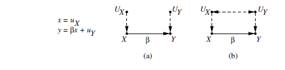
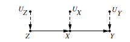
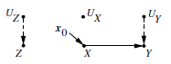
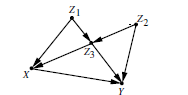
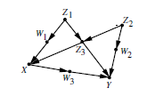
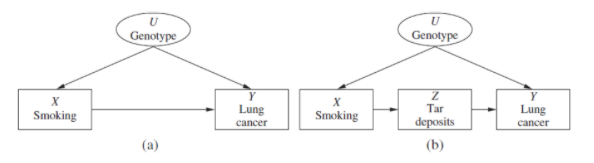
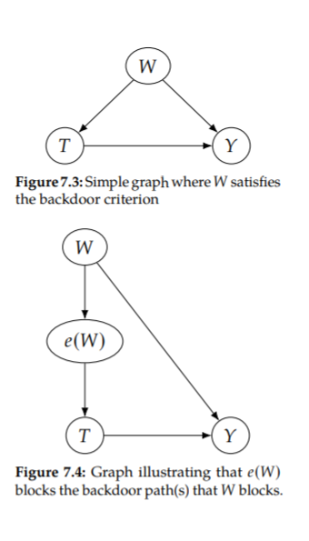
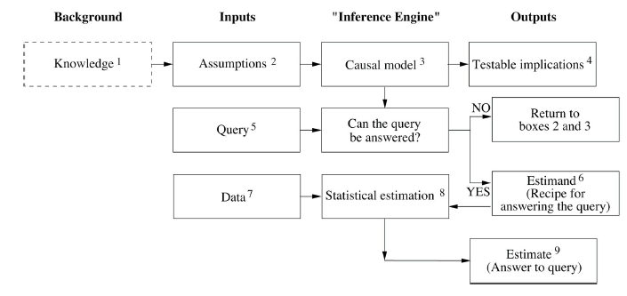

前言
因果关系是什么？为什么我们要用因果思维分析问题？又如何分析一个因果关系？
这些问题看起来好像并不难回答，从刚刚接触这个世界开始，我们就习惯了因果的思维，在拥有基本常识的情况下，我们可以轻松地判断简单的因果，比如公鸡打鸣并不能导致太阳升起，而是后者决定了前者。但其实，人类长久以来都缺乏对因果问题的一个严格地、数学化的定义。
一方面，这个问题曾吸引了哲学家们的热烈关注和讨论，但并没有得到一个令人满意的结果，比如代表性的大卫·休谟认为因果是”constant conjunction”（如果A总是在B之前发生，那么A就是B的原因），但以闪电和雷声为例，我们会发现它们只是同一个原因带来的两个结果。还有很多哲学家站在了认知论的立场上，认为因果是不可还原的，归纳不能得出因果，比如大名鼎鼎的农场主悖论，而忽略因果作为客观规律的存在，给因果蒙上了一层形而上学的神秘面纱。
另一方面，随着近年来统计学和以深度学习为代表的大数据科学的兴起，人们沉迷于对数据中相关性的研究，而逐渐遗忘了因果关系的重要性。虽然统计学家们明白相关性不等于因果性，但仅仅依靠统计学和机器学习取得的伟大成就使他们有意或无意地忽视了对因果性的深入分析。直到近年来，对深度学习不可解释性的抨击才让因果关系这个词开始被主流学界重视。
其实，早在统计学家开始重视因果关系并试图将它用于整个学术界之前，在经济学、遗传病学等领域，已经有一些比较成熟的表示推理的框架。图灵奖得主、贝叶斯网络之父Judea Pearl则在上世纪90年代提出了结构因果模型（Structural Causal Model, SCM），试图用一种统一的、数学化的理论去表达因果，并将概率图模型用于了因果表示当中。结构英国模型也是目前最广泛、最成熟的模型，下面本文会以SCM为主要内容，对现在主流的因果推理研究进行介绍。
从相关到因果
统计学家们明白“相关关系不等于因果关系”，但却没有进一步解释因果关系到底是什么，从现代统计学诞生开始，它就将主要精力集中在了如何总结数据，迷恋于对于数据的观察性结论，而不关注如何解释数据，探究数据从何而来。随着大数据技术的不断发展，人们终于意识到仅仅分析数据间相关性的不足，对因果关系的研究得以重回人们视野。
根本差异：应对变化
标准统计分析的目标是使用回归、估计、假设检验等方法从符合某个分布的样本中计算出该分布的参数，有了这些参数之后，就可以计算变量之间的关联性，预测未来观测到某件事情发生的概率。因果分析在此基础上试图更进一步，不仅仅是预测在静态被动观测条件下事件发生的概率，还想要预测在外界干预下会产生的变化。
比如，如果统计“冰激淋销量”和“溺死者数量”随时间的变化，我们不难想象可以发现两者之间会有高度的相关性，这并不是因为两者之间存在因果关系，而是因为它们同时被一个共同原因“气温”所影响。如果在被动的观测中，我们发现一方减少，就可以推断另一方减少的概率也会增大，但是如果我们为了降低溺死量主动禁售冰激凌，显然是很滑稽的。
我们不难发现，相关性的关系应该是对称性的，在被动的观测下，我们不能区分出具有相关性的两个变量间地位的差异，而因果性是不对称的，因和果之间不能颠倒，我们介入果不能改变因，但介入因可以让果发生变化。
对常识性的问题，我们的大脑可以自然地明白其中的因果关系，因果关系其实就是不随外界而变化，并能决定变化带来影响的内在关系。因此想要预测外界干预，前提就是要掌握足够的因果关系。而对于更复杂的场景和数据，我们就不能再依赖大脑直觉进行因果理解，而是需要用一种显式的、数学化的方式将因果关系表示出来。
未检验假设和表达因果的新符号
从数学化和公式化的角度，相关性和因果性的概念间还有一个明显的差异：相关性的关系可以用可观测变量的联合分布进行表示，而因果关系是不能单独从分布中直接被定义的。也就是说，我们无法单独依靠数据中的统计关联性去分析因果层面上的问题，而必须有一些给定的因果关系，或者说，因果假设。
比如，我们想要探究一个简单的因果结论，是“某种疾病导致了某种症状”，还是“症状导致了疾病”，这仅仅依靠数据和统计学的方法是无法解决的，我们可以计算出P(disease|symptom)，但从中只能得出两者之间具有统计相关性，但无法判断其中的因果联系。
对两个相关变量而言，它们之间的统计相关性可能并不是（完全）来自彼此间的直接因果联系，而是被其他的混杂因子所影响(confounder)，比如相关性可能来自一个共同原因的两个不同结果。
因此，在我们可以使用传统的统计方法进行因果推理之前，还需要解决两个问题：(1).充分的因果假设，可以表达出必要的混杂因子，以及它们与需要研究的因果变量之间的联系，这些假设是没有办法通过统计样本得到的，也无法通过样本检测它的正确性，需要利用先验知识给出经验性的假设。(2).可以表示因果假设和因果概念的新的数学语言和符号，我们需要对传统的概率统计的语言进行扩展，来满足进行因果推理的需求。
要发明一种新的表示因果的语言，就要从因果的不对称性入手，一种自然的想法是通过表示介入来体现不对称性，Rubin的potential outcome 框架和Pearl 的do-calculus都采用了这样的方式。
Potenial outcome框架中的符号通过下标来表示介入或反事实的变量，$Y_x(u)$代表对于个体u（可以看作环境中的其他变量），在treatment X= x时，treament Y的取值，当u随机选取时，$Y_x$将是一个随机变量。
而Pearl则提出了do-算子来刻画介入，将一个表达式放入do()中意味着主动使表示式中的取值发生，以区别于客观地观察，P(Y=y|do(X=x))代表了主动使treament X取值为x时，outcome Y=y 的概率。
除了公式化的表达之外，Pearl还告诉我们可以用图模型的方式来表示因果，我们采用有向的箭头作为边就可以表达出不对称的因果关系。
下面我们将具体介绍如何形式化表达因果关系。
Potential Outcome 框架
Potential Outcome Framework，也被称为Neyman-Rubin Causal Model，当Jerzy Neyman 在1923年首次提出Potenial Outcome 框架时，还只是将它用于随机对照实验之中，后来Rubin将它拓展为更通用的框架，不仅仅可以分析实验数据，还可以分析观测数据。
目标：Average Treatment Effect
以一个经典的场景为例，我们令treatment X代表是否使用某种药物，X=0 代表未使用，X=1 代表使用，令outcome Y 代表疾病的治X疗效果，Y=0 代表治疗失败，Y=1 代表治疗成功。Potential Ountcome 框架中用$Y_x(u)$代表对个体u，当X取值为x(if X were x)时，Y将要取的潜结果，当U为一个随机变量时，$Y_x$也将成为一个随机变量。在本例中，$Y_1$代表如果之前使用了药物情况下潜在的治疗效果，$Y_0$代表如果之前没有使用药物情况下潜在的治疗效果。
要度量某种药物的疗效，自然要去比较和不使用时的的差异，对某个个体i，可以定义individual treatment effect（ITE)：
$$\tau_i = Y_0(i) - Y_1(i)$$
但需要注意的是，对给定的个体，我们不可能同时观测到所有的potential outcomes，如果你服用了药物然后痊愈，你就无法再观测在不服用药物的情况下你是否可以痊愈，除非你可以通过时光机回到过去（这种无法观测到的情况被称为反事实问题，会在后面详细讨论）。既然无法针对同一个体同时观测到两种情况，也就无法真正判断药物的疗效，但我们可以计算在某类人群中的平均治疗效果，也就是Average Treatment Effect(ATE):
$$\tau = E[\tau_i] = E[Y_0(i)-Y_1(i)] = E[Y_1-Y_0]$$
对某个个体而言$Y_x(i)$是一个常量，但对于有多个个体的样本而言，Y_x可以看作一个随机变量。
虽然有了目标的表达式，但并不意味我们得到了最终的结果，在之前的讨论中我们已经知道仅仅从观测的数据中是无法得到因果关系的，这意味着：
$$ E[Y_x] \neq E[Y|X=x] $$
因此，
$$ E[Y_1 - Y_0] \neq E[Y|X=1] - E[Y|X=0]$$
想要计算出ATE还需要足够的因果假设，在下一节中我们将讨论在potential outcome 框架中如何表示这些因果假设。
此外，根据不同的研究目的和兴趣，有时我们并不是想计算整个人群中的治疗效果，而是更关注某类人群，比如：
$$ATT = E[Y_1 - Y_0 | X = 1] , “Average\ Treatment\ effect\ of\ the\ Treated”$$
$$ATC = E[Y_1 - Y_0 | X = 0] , “Average\ Treatment\ effect\ of\ the\ Control”$$
可识别性与“可忽略性”假设
要判断一个因果量(比如ATE）能否在数据中得到，关键是判断我们有没有足够的因果假设能将其表达为一个纯粹的统计量，即，可以直接从观测数据中得到的量。
定义：可识别性(Identifiability)
一个因果量如何可以等价为一个纯粹的统计量，则称它为可识别的(identifiable)。
在potential outcome框架中，将反事实量$Y_x$视为一个随机变量，从而使因果语言可以和传统的概率语言统一起来，因果假设也自然地可以用概率语言所表述，在大部分情况下它们会以带有反事实随机变量的条件概率的形式出现。
如果我们认为X和Y有着直接的因果关系，并且没有混杂因子干扰，那么我们就可以将反事实变量和观察到的统计量等价($E(Y_x)=E(Y|X=x)$),这种假设被称为“可忽略性”（ignorability）假设。
假设：Ignorability
$$Y_x \perp X$$
但通常情况下，直接假设X和Y之间有可忽略性是不现实的，但我们可以定位出某些混杂因子，在对这些混杂因子Z进行控制时，X和Y之间具有可忽略性，这被称为”条件可忽略性”。
假设：Conditional Ignorability/Unconfoundedness
$$Y_x \perp X | Z $$
如果我们可以观测到所有出现在公式中的混杂因子Z，就可以识别出X对Y的因果影响，不过这还需要一个一致性假设：
假设：Consistency
如果观测到treatment X=x， 那么此时观测到的Y应该与$Y_x$ 一致。
$$X=x \Rightarrow Y_x = Y$$
这是一个符合我们直觉的假设，如果我们观测到一个病人接受了治疗并且痊愈，那么如果我们之前选择主动使其接受治疗，他也自然会痊愈。
有了一致性假设，我们就可以从条件可忽略性出发推导出X对Y因果影响的可识别性：
$$
\begin{aligned}
P[Y_x = y] &= \sum_z P(Y_x = y|z)P(z) \\
&= \sum_z P(Y_x = y|x,z)P(z) (conditional ignorability)\\
&= \sum_z P(Y = y |x,z)P(z) (consistency) \\
&= \sum_z P(y|x,z)P(z)
\end{aligned}
$$
同理，ATE也可以被识别:
$$
\begin{aligned}
E[Y_1 - Y_0] &= E_x[E[Y_1-Y_0|Z]] \\
&= E_x[E[Y|X=1,Z] - E[Y|X=0,Z]]
\end{aligned}
$$
Potential Outcome 框架给我们提供了一种因果表示和因果估计的完整方法，但想要分析和得到必要的”可忽略性”假设仍不是一件容易的事，如何保证假设的混杂因子是充分且正确的？直接做出条件可忽略性的假设并不容易，我们还希望有一种方法能帮我们找到合理的混杂因子，幸运的是，Pearl的图模型可以帮我们做到。
结构因果模型
一个合格的因果理论应该可以满足以下四个要求：(1).可以用数学语言表示因果问题。(2)可以用精确的语言来表示因果假设。(3).可以有用一个系统的方法判断在给定的因果假设下，因果问题可不可解，如果可解可以给出解答。(4).对一个不可解因果问题，可以判断给出哪些新的因果假设或者可观测变量，能够使得问题变得可解。
Pearl提出的结构因果模型(SCM)可以满足以上的四个标准，同时也是目前最主流的因果模型。曾经依靠贝叶斯网络拿到图灵奖的Pearl，自然地将概率图模型引入了因果领域，同时与结构方程模型和Potential Outcome框架相结合，形成了一套完整的理论体系。
因果方程和因果图
遗传学家Sewall Wright 在1921年最早尝试了结合数学方程和图模型去刻画因果关系，他使用线性方程的方式代表因果关系。假设要表示某种疾病和某个症状之间的因果关系，Wright会写出如下的因果方程：
$$y = \beta x+ u_Y $$
其中y代表症状的严重程度，x代表疾病的严重程度，$u_Y$代表所有可能在x固定时影响y的其他变量。值得注意的是这个方程并不应该被看作传统的数学方程，传统的数学方程有着对称性，变量可以在等号两边自由地做移项变换，并不会影响方程的正确性，但在因果方程中，如果把x和y位置互换，就会让人误解是症状导致了疾病。
为了更清晰地表述因果关系，Wright又在方程基础上增加了一个图模型，并命名为”path disgram”，上述问题可以用下图表示：

图中的结点代表了我们关心的变量，边代表着两个变量间存在因果关系，而箭头代表着因果的流向，X指向Y的有向边代表了X是Y的一个直接原因，这样我们就可以将因果假设表示在一个有向图中。值得注意的是不仅仅是带有箭头的边表达了因果假设，两个变量间不存在边同样代表了重要的假设，这意味它们之间不存在直接的因果关系。
图中的$U_X$,$U_Y$被称为外生变量，它们代表着可能影响X或者Y的所有不会模型中被刻画的变量，往往我们不能抓住问题的全貌，所以我们选择更加关注主要矛盾，而把不重要的或者无法观测到的次要矛盾以外生变量的形式刻画。当然$U_X$ 和$U_Y$之间有没有因果关联也是需要进行说明的，图中分别表示了两种不同的情况，右图中的双向箭头的虚线代表可能存在未知的混杂因素，而左图中箭头的缺失代表了更强的假设：$U_X$ 和$U_Y$之间不会再有其余的因果路径。
Wright的贡献被发展为结构方程模型(Structural equation modeling,SEM),并成为了经济学和社会科学使用的一个主要工具，但只适用于线性方程也也成为了它的一个局限性。因此，Pearl等人将其拓展到了非线性、非参数的模型中。

比如上图中的因果图可以用如下非参数方程来表示：
$$
\begin{aligned}
z &= f_Z(u_Z) \\
x &= f_X(z,u_X) \\
y &= f_Y(x,u_Y)
\end{aligned}
$$
在上述方程中，用f(·)中代替了具体的带参数方程，但保留了对因果假设的刻画，我们可以很清晰地看出等号左边的变量代表了结果，f(·)中的变量代表了影响对应结果的原因，而没有在f(·)中出现的变量也代表了和等号左边的变量没有直接的因果关系。
介入的表达
前面我们讲过相关和因果的一个核心差异就在于能否处理主动介入的问题，在下面我们将会介绍如何在SCM中表达介入，我们将发现图模型可以非常好地完成这个任务。
首先，SCM中定义了do运算符来表达介入，do（X=x）代表了主动介入保持X的值恒定为x，P(Y|do(X=x))代表了主动使X=x时Y取值的概率分布，可以将上节中Potential Outcome的表达方式与do操作符统一起来:
$$P(Y_x = y) \triangleq P(Y=y|do(X=x)) \triangleq P(y|do(x)) $$
我们认为do运算符对x的本身是以某种方式直接对x进行改变，而与模型中的其他变量无关，这意味着切断所有x原有的所有因变量对其的影响，而将它直接赋值，同时所有其他的因果关系保持不变。
考虑在SCM中表达$do(x_0 = x)$，在因果方程中，可以直接将原有的x的方程更改为$x=x_0$，而在因果图中，要将所有原有指向x的箭头移除，再增加一条新的箭头将x赋值为$x_0$，仍以图2为例，介入的因果图应该修改为：

因果方程应该修改为：
$$
\begin{aligned}
z &= f_Z(u_Z) \\
x &= x_0 \\
y &= f_Y(x,u_Y)
\end{aligned}
$$
同样，我们也可以用do运算符的形式来表达ATE：
$$E(Y|do(x_0’)) - E(Y|do(x_0) $$
也可以用因式的模式来表达类似的效果，这被称为experimental Risk Ratio:
$$E(Y|do(x_0’))/E(Y|do(x_0)) $$
可以发现计算因果问题的关键就是找到一个计算P(Y|do(x))（这个量被Pearl称为”causal effect”)的方法，这也就是前文中提到过的可识别性问题，下面我们将看到图模型是如何帮助完成识别过程的。
介入的识别
对于一个非参数的因果模型而言，其实我们关注的只是因果流向的关系，而忽略了具体的函数表达形式，因此只需要因果图模型就可以表达出其中所有的因果假设，可识别性的判断也可以只使用图模型来解决，而不用设计繁琐的代数分析。
在图模型中进行因果分析，还需要对其做一个前提假设，我们希望因果关系可以表示在一个马尔科夫的模型中，这意味图模型应该是一个有向无环图（dag），并且外生变量之间应该是相互独立的。
对一个Markovian SCM，可以满足如下的因果马尔科夫条件：
定理：The Causal Markov Condition
在一个马尔可夫因果模型中的任意概率分布都满足如下公式：
$$p(v_1,v_2,…,v_n) = \prod_i P(v_i|pa_i)$$
其中，$v_1,v_2,…,v_n$代表模型中任意的内生变量，$pa_i$代表内生变量中$v_i$的所有父节点(有箭头从该结点出发直接指向$v_i$的结点)
利用马尔可夫条件，可以把一个联合概率分布拆分为多个概率分布的积，我们也可以把这条规则推广到有介入存在的场景下。
定理：Truncated factorization
在一个马尔可夫模型中，由介入$do(X=x_0)$生成的因果分布满足：
$$p(v_1,v_2,…,v_k|do(x_0)) = \prod_{i|v_i \notin x} P(v_i|pa_i)|_{x=x_0} $$
利用这个公式，可以将在介入中出现的的变量从右边的连积中移除，因此被称为Truncated factorization.
我们以一个稍微复杂的模型(图4)为例，为了简单起见，在下图中每个变量的外生变量都被隐藏起来。

利用Truncated factorization，我们可以直接得到：
$$p(z_1,z_2,z_3,y | do(x_0)) = p(z_1)p(z_2)p(z_3|z_1,z_2)p(x|z_1,z_3)p(y|z_2,z_3,x) $$
再对变量Z进行控制，就可以计算出x对y的因果效应：
$$p(y|do(x_0)) = \Sigma_{z_1,z_2,z_3}p(z_1)p(z_2)p(z_3|z_1,z_2)p(y|z_2,z_3,z_0)$$
如果需要的父节点都是可观测的，很容易地就可以通过Truncated factorization将一个带有介入的因果量转换为一个统计量，但在存在不可观察的混杂因子的情况下，问题会变得更加复杂。
处理不可观测的混杂变量
Back-door Criterion
如果我们要研究药物的治疗效果，我们还要考虑其他的混杂因子，这些混杂因子有的是可观测的，比如性别、年龄、收入水平等等，而有的是难以被观测或者量化的，比如基因类型、行为习惯等等，现在的问题是能不能在可观测的变量中找到合适的变量集，在对这个变量集进行控制时，可以计算出正确的因果效应，我们称这个变量集为”admissible set”。
早在贝叶斯网络的研究中，Pearl就提出过名为d-speration的概念，可以用于在有向图中判断变量间的条件独立性。
考虑最简单的三个结点X、Y、Z和两条有向边组成的图结构，要判断$(X\perp Y|Z)$，就要判断在图中Z能否“封锁”住X到Y的路径，会有如下三种情况：
1.$X\rightarrow Y \rightarrow Z$,称之为“chain”,或”mediation”,可以将Y看作中介，将X的作用传递到Z，此时有$(X\not\perp Z),(X\perp Z|Y)$.
2.$X\leftarrow Y \rightarrow Z$,称之为“fork”,Y是X和Z的共同父节点，此时同样有 $(X\not\perp Z),(X\perp Z|Y)$.
3.$X\rightarrow Y \leftarrow Z$,称之为”collider”,X和Z是决定Y的两个不同原因，此时有$(X\perp Z),(X\not\perp Z|Y)$,注意到给定Y时，X和Z的独立性反而被打破，这并不难理解，比如我们扔出两个独立的骰子，在已知两个骰子点数之和时，它们各自的点数不再独立，给出任意一个，我们就可以知道另一个。
推广到一条有三个以上的路径p，p中的每一个结点与相邻结点组合都可以视为三个基本结构中的一种，当路径中有一个collider的中间结点时，就不再需要控制任何结点，反之，在控制集中也不能出现任何collider的碰撞结点或其后代，而路径中没有collider结构时，我们要至少控制一个chain或fork结构的中间结点。
定义：d-Separation
一条路径P被一个变量集Z d-sepatate(或者说，封锁)，当且仅当：
1.p中有一个chain或fork结构，且它的中间结点m在Z之中。
或者，2.p中有一个collider结构，且他的碰撞结点c及c的后代不在z之中。
如果Z封锁了X到Y的每一条路径，那么就称Z d-separate 了X和Y.
回到因果问题中，我们可以有一个自然的想法：如果我们可以用一个控制集封锁住除了直接因果路径之外的所有其他路径，我们可以得到想要的因果关系。这样的其他路径被称为“后门路径”(back-door path),是虚假的统计相关性的来源。
定义： Back-door 准则
在一个DAG G中，一组变量集Z相对于另一对有序变量对$(X_i,X_j)$满足back-door准则需要符合以下条件：
1.Z中没有结点是$X_i$的后代，并且
2.Z封锁了所有$X_i$和$X_j$的back-door path,即，有一个箭头指向$X_i$的连接$X_i$和$X_j$的路径(无视方向的路径)。
Back-door criterion 的正确性是符合直觉的：我们需要阻断每一条backdoor criterion ，他们会导致X和Y互相依赖，但没有传递因果影响；但我们不能控制任何X的后代，因为后代可能会向Y传递直接的影响；最后，我们应该尽量不在backdoor 中控制一个collider,这样会打开一条backdoor,如果不得不这样做，那么必须在新增加的backdoor中控制其他非collider的变量。
以下图所示的SCM为例：

假设在图中的$Z_1,Z_2,Z_3$是可观测变量，$W_1,W_2,W_3$是不可观测变量，我们可以判断只要控制${Z_1,Z_3}或者{Z_1,Z_2,Z_3}$就可以符合后门准则，即可在有不可观测变量的情况下得到想要的因果量。
Front-door Criterion
无法找到合适的控制集并不意味着无法识别出因果效应，在一些无法使用back-door 准则的场景下，我们仍然可以找到合适的方法进行因果识别，比如借助中间变量进行多阶段的控制。

在上图中，因为有不可观测变量U的存在，无法封锁住X到Y之间的back-door 路径，但如果可以在X到Y的直接路径之间找到一个可以被观测的中间变量Z，就可以借助他来进行因果识别，与back-door相对，我们称这条路径为front-door。
虽然不能直接计算x对y的因果效应P(y|do(x)),但我们可以将其分解为：
$$P(y|do(x))=\sum_z P(y|do(z))P(z|do(x)) $$
而右边的两个路径我们都可以找到合适的控制集计算得到，X到Z的后门路径上有一个碰撞结点y，因此不再需要控制认为结点，而Z到Y的后门路径只要控制结点X即可。
$$P(z|do(x))=p(z|x)$$
$$P(y|do(z)) = \sum_x P(y|z,x)P(z|x)$$
$$P(y|do(x))=\sum_z P(z|x) \sum_{x’}P(y|x’,z)P(x’) $$
推广到一般形式，可以有如下的front-door 准则:
定义：Front-Door
一个变量集合Z关于一组有序变量对(X,Y)满足Front-Door准则，意味着它满足以下条件：
1.Z封锁了所有X到Y的直接路径
2.X到Z之间不存在没有被封锁的back-door Path
3.所有从Z到Y的 back-door path都会被X封锁
定理：Front-Door Adjustment
如果存在Z关于(X，Y)满足front-door准则并且P(x,z)>0，那么X到Y的因果影响就是可识别的，并可由下式给出：
$$P(y|do(x))=\sum_z P(z|x) \sum_{x’}P(y|x’,z)P(x’)$$
混杂的一般性控制和 Do-calculus
虽然有了前门和后门准则，但我们还是希望有更一般性的判断可识别性的方法，Pearl在1995年曾经提出了三条一般性的推理规则，称之为 do-calculus,并证明了它的完备性。
Tian 和 Pearl 在2002年提出了一个判断可识别性的充分条件，问题的关键并不是去封锁住X到Y的所有路径，而是找到封锁住X到所有XY之间直接路径上中间变量Z的路径。
基于上述结论和do-calculus，Shpister和Pearl 又在2006年提出了判断可识别性的充分必要条件，并提出了可以判定一个介入问题是否可以识别的多项式时间算法。
随机试验
在完备的因果理论建立之前，随机对照试验被认为是获得因果关系的唯一途径，随机试验将试验对象随机分为试验组和对照组，以此消除混杂因子的影响，因而在随机试验中我们不再需要去控制任何混杂因子，也就是说即使所有混杂因子都不可观测也没有关系。
下面我们从因果模型的角度出发来尝试说明随机试验的正确性：
假设对因果问题P(y|do(X))，z是一个合适的控制集(这样的控制集一定可以找到，因为在这里我们并不在意控制集中的变量到底是否可观测)：
$$
\begin{aligned}
p(y|do(x)) &= \sum_z p(y|x,z) p(z) \\
&= \sum_z \frac{p(y|x,z)p(x|z)p(z)}{p(x|z)} \\
&= \sum_z \frac{p(y,z,x)}{p(x|z)}
\end{aligned}
$$
由于随机试验的影响，X的选择完全是随机的，而不受其他变量的干扰，因此有$(x\perp z)$,回到上式有：
$$
\begin{aligned}
&= \sum_z \frac{p(y,z,x)}{p(x)} \\
&= \sum_z p(y,z|x) \\
&= p(y|x)
\end{aligned}
$$
也可以借助图模型来帮助我们思考，随机试验相当于移除了图中所有的指向x的箭头，因此也不会再有由x到y的后门路径，不需要再对任何其他变量进行控制，便可以直接将观测到的统计量与因过量划等号。
从识别到估计
在之前的文章中，我们讨论了主流的因果模型以及如何判定可识别性的问题，而将一个因果量成功转化为统计量仅仅是因果推理的第一步工作，我们还需要考虑如何将一个统计量转化为对应的数值估计结果。
前文中我们定义了ITE和ATE两个衡量因果效应的概念：
$$\tau_i = Y_0(i) - Y_1(i)$$
$$\tau = E[\tau_i] = E[Y_0(i)-Y_1(i)] = E[Y_1-Y_0]$$
除非我们可以做出很强的假设，否则我们无法求解ITE中的反事实变量，但我们仍然希望能更针对某一类个体求解因果效应，因此又产生了CATE（conditional average treatment effect）这一概念：
$$\tau(z) = E[Y_1 - Y_0 |Z] $$
在本节的讨论中，我们假定我们要估计的量是都可以被识别的，并且W是一个可以满足后门路径的充分控制集，对CATE问题，$W\cup Z$是一个充分控制集。
COM 和 GCOM
在有可观测的充分控制集W的前提下，问题就转化为了计算E[Y|XX,W]：
$$\mu(x,w) \triangleq E[Y|X=x,W=w] $$
我们目标就是选择一种合适的统计模型结合数据计算出$\mu$的统计近似量$\hat{\mu}$,然后就可以对ATE进行估计：
$$\hat{\tau} = \frac{1}{n}\sum_i(\hat{\mu}(1,w_i)-\hat{\mu}(0,w_i)) $$
我们称这种形式为conditional outcome model(COM) estimators，因为这里的核心工作是拟合出一个由(X，W)预测Y的统计模型，有许多的统计方法都可以完成这个工作。
对CATE形式，可以表达为：
$$\mu(x,w,z) \triangleq E[Y|X=x,W=w,X=x] $$
$$\hat{\tau}(z) = \frac{1}{n_z} \sum_{i:z_i=z}(\hat{\mu}(1,w_i,z)-\hat{\mu}(0,w_i,z)) $$
其中$n_z$代表所有数据点中满足先验条件$x_i= x$的数据个数。COM estimator 有时又被称为”S-learner”,其中S代表“singer”。
对常见的因果问题来将，X往往是一维的或者低维的，而当W维度变得很高时，再通过(X,W)来训练预测Y的模型，X的地位就会变得很低甚至被忽略，此时我们可能就会发现我们得到的ATE近似于0。为了解决这个问题，我们想到将X=1和X=0 的数据划分开来，分别训练出两个模型，再将两个模型的预测值相减来计算ATE。
$$\mu_1(w) \triangleq E[Y|X=1,W=w] , \mu_0(w) \triangleq E[Y|X=0,W=w] $$
$$\hat{\tau} = \frac{1}{n} \sum_i(\hat{\mu_1}(w_i)-\hat{\mu_0}(w_i)) $$
$$\hat{\tau} = \frac{1}{n_z}\sum_{i:z_i=z}(\hat{\mu_1}(1,w_i,z)-\hat{\mu_0}(0,w_i,z))$$
上述计算方法被称为group conditional outcome model(GCOM) estimators，在这种方法里我们只用了部分数据去训练一个模型，再用其他数据去训练另一个模型，还有许多方法可以改进在GCOM中数据的利用效率，比如TARNet和X-Learner，在这里不再展开讲述。
倾向得分
倾向得分是进行干预分析时一种知名的对数据降维的手段，对一个满足后门准则的控制集W，我们知道有$(Y_1,Y_0 \perp X)|W$ 成立，但下面我们将说明其实我们没有必要对所有W中的变量进行控制，尤其当W的维数很高的情况下。
令e(w)表示P(X=1|W=w)，它代表了在W取w时干预被观测到的概率，因此我们称其为倾向得分(propensity score),倾向得分有一个神奇的性质，我们对e(W)进行控制和对W进行控制有着相同的效果。

在这里不给出严格的数学证明，但我们可以在图模型的帮助下理解它地的正确性，如上图所示，在原有的因果图加入e(W)时，它应该被放在w和T的路径之间，因此，只要W可以切断所有后门路径，那么只用e(W)就可以切断。一种常见的做法是通过逻辑回归来得到e(W)。
此外，这里不用讲述的其他常用的估计方法还有Double Robust Methods, Matching, Causal Trees and Forests等等。
因果推理引擎
新时代的因果革命，也让计算机从业者看到了实现强人工智能的新曙光。虽然现有对因果模型的研究，还不足以教会机器去思考“为什么”和因果，但我们意识到了让机器具备这种能力是实现强人工智能的必要一步。
现如今，我们希望借助计算机实现一种自动化的因果推理引擎，它可以作为未来人工智能进行因果推理的蓝图，也可以帮助我们现代的各个领域的科学家们去解决研究中的”为什么“问题，而不仅仅只是用机器学习和统计关联性去思考问题和分析数据。
Judea Pearl 在《the book of why》的序章中曾提出过下图中的因果引擎的框架，它可以指导我们到底如何在研究中使用因果模型，以及如何使用它来分析数据。

简单来将，”Knowledge” 代表了人类过往的经验和观察，从知识中我们可以形成对研究领域需要的假设，然后可以把假设量化为因果模型，量化的形式可以是因果图，也可以是因果方程或者任何你喜欢的模式。有了因果模型，我们就可以提出相关的因果问题，然后在模型中判断该问题是否可以回答，如果可以，那么就意味着它可以被转换成一个统计问题，可以结合数据来进行估计。
在日常生活中，仅仅依靠我们的因果直觉往往就能解决大多数的因果问题，但要想让机器可以思考因果，并在科学研究中使用机器去分析因果，这样看似复杂的因果引擎有着重要的意义。
参考文献
- [1] The Book of Why - Judea Pearl
- [2] Causality - Judea Pearl
- [3] Causal inference in statistics:An overview - Judea Pearl
- [4] Introduction to Causal Inference - Brady Neal